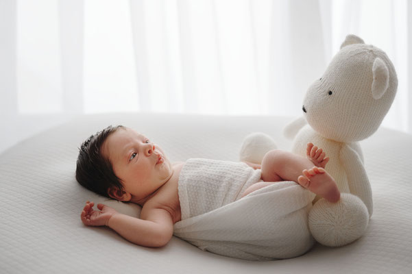

NEUGEBORENENFOTOGRAFIE
Wie bereitet man sich auf ein Neugeborenen-Shooting vor?
Checkliste, Kleidung und wertvolle Tipps für einen entspannten Start ins Newborn Shooting.

Ein Neugeborenen-Shooting ist eine besondere Gelegenheit, die ersten magischen Momente eures Babys festzuhalten. Oft ist es auch der erste Ausflug mit eurem Neugeborenen – eine gute Vorbereitung hilft dabei, eine ruhige und entspannte Atmosphäre zu schaffen.
1. Wie läuft ein Neugeborenen-Shooting ab?
Die Session dauert ca. 3 Stunden und bietet ausreichend Zeit für Füttern, Einschlafen und sanftes Positionieren eures Babys. Mein Ziel ist es, eine ruhige Atmosphäre zu schaffen, in der sich euer Kind sicher und geborgen fühlt.
- Schaut euch mein Portfolio an und wählt fünf Bilder, die euch besonders gefallen.
- Passt eure Kleidung an den Stil der Session an.
2. Welche Kleidung ist am besten?
- Dunkle Kleidung eignet sich besonders für Aufnahmen mit schwarzem Hintergrund.
- Helle und pastellfarbene Töne wirken harmonisch auf hellem Hintergrund.
- Für Familienaufnahmen: abgestimmte Farben ohne Muster oder Logos.
- Boho-Sessions bitte im Voraus buchen, damit ich alles vorbereiten kann.
Tipp: Die Hände der Eltern sind oft auf den Bildern sichtbar – achtet daher auf gepflegte Hände und Nägel.
3. Der erste Ausflug – was mitnehmen?
Eine gut vorbereitete Tasche gibt Sicherheit und Ruhe. Diese kleine Checkliste hilft euch beim Packen:
- Zusätzliche Windeln
- Feuchttücher
- Ersatzkleidung
- Lieblingsdecke
- Fläschchen oder abgepumpte Muttermilch
- Schnuller
- Kuscheltier oder Mulltuch
- Für die Eltern: Wasser und ein kleiner Snack
4. Entspannung & Wohlfühlatmosphäre
- Plant für den Tag keine weiteren Termine ein.
- Gebt eurem Baby die Zeit, die es braucht.
- Vertraut mir – ich begleite euch mit Ruhe und Erfahrung.
Falls ihr Fragen habt, meldet euch gern bei mir.
Möchtet ihr euer eigenes Neugeborenen-Shooting buchen?
Gerne begleite ich euch in den ersten Lebenstagen eures Babys mit einer ruhigen, sicheren und liebevollen Newborn Session.